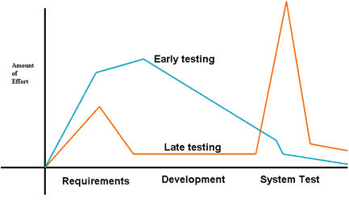
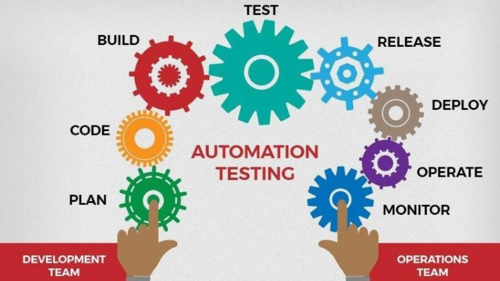
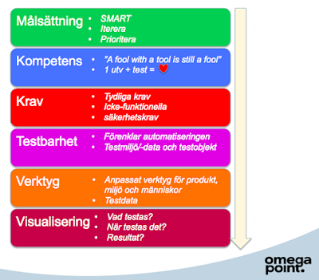
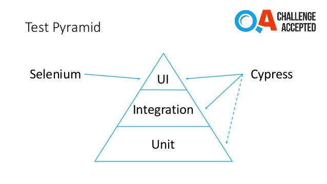

- Mina tankar kring företaget Stadium som jag också beskrivit här ovan. Stadium är ett fantastisk företag som många nog drömmer om att få jobba i. Min känsla kring Stadium, Ulf, Bo samt Kalle Eklöv, har gjort, gör ett fantastisk jobb tillsammans med alla i Teamet. Team Spirit och passion lever rakt igenom hela huvudkontoret ut till butikerna.
Jag vet själv när jag började och med vilken passion som jag sålde varor till de bästa för kunderna.
- Då jag har spenderat 13 år av mitt liv på Stadium så skulle jag säga att jag var på nytt mycket exalterad över att börja praktisera och nu när de har gått ca: halva tiden så känner jag att jag har blivit Beroende av Test, hitta buggar, då jag lagt barnen i säng så sitter jag och slö surfar kör (Utforskande Test)på Stadium webb sidor, skriver Test planer, Test steg, dokumenterar allt skriver Auto tester och kör, stöter jag problem så försöker jag med Google lösa detta om inte olika Communities och kollegor.
Det bästa hade vart om man hade en lärare och kunna vända sig till, där känner jag att Skolan inte har kunnat ställa upp.
- Det hela har hela tiden lett till att jag har utvecklat mina kunskaper, samtidigt är uppgifterna utmanande. Vilket känns extremt roligt. Jag tycker om att Testa. Även om jag nu efter halva tiden märker att allt helt enkelt inte går att automatisera.
För Stadiums del känner jag att man skall Stress Testa allt, Pusha alla knappar som går att Pusha. Man behöver här också följa gamla dokument, tidigare fel som uppstått och försöka auto Testa även dem.
Här nere beskriver jag lite vilken sorts testning Stadium bör fortsätta med
- - Utforskande Test – Dessa är inga definierade testfall. Istället utför jag tester samtidigt som jag hela tiden försöker tänka ut vad som bör testas i nästa steg samt hur detta skall testas
- - Komponenttester – Testa en komponent i taget – Tänk xUnit – Kan hitta 10-50% av fel
- - Integrationstester – Testa två eller fler komponenter med varandra – Undvik big bang integration
- - Användbarhetstestning – Detta är ett område inom vilket du behöver mäta hur användarvänlig, effektiv eller smidig mjukvaran eller produkten är för slutanvändarna.
Här är mänsklig observation den viktigaste faktorn, så ett manuellt förfarande är att föredra.
- - Stresstestning – är en test aktivitet som bestämmer programvarans robusthet genom att testa utanför gränserna för normal drift.
I stresstester läggs vanligtvis större tonvikt på robusthet, tillgänglighet och felhantering under tung belastning än vad som skulle anses vara korrekt beteende under normala omständigheter.
- - Systemtester – Testa hela systemet – Efterlikna målmiljön – Kan hitta upp till 85%
- - Acceptanstester – Testar inte ”för att hitta fel” – Målet är att kunden ska få tilltro till systemet – Utförs ofta av kunden
Varför testa tidigt

- Mjukvara finns överallt
- Folk gör fel – Tidspress – Komplex kod – Komplex infrastruktur – Förändrad teknologi – Många system
- Test av system och dokumentation identifierar/reducerar risk och kan bidra till kvalitet
- Test gör det möjligt att mäta kvalitet
- Enhetstester är det enda sättet att ens övertyga ens kunder och vänner att din kod inte suger helt.
- Testa samtidigt som utveckling, Ju tidigare du hittar fel, desto lägre kostnad
Vad är testautomatisering?
Testautomatisering innebär en effektivisering av nuvarande testprocess. Genom att bryta ner tidskrävande, manuella arbetsuppgifter till kod kan du skapa ett större förtroende för din applikation. Ett förtroende som innebär att du vågar släppa ny kod till produktion kontinuerligt.

Testautomatisering innebär att förändringar i din applikation kan verifieras redan innan de släpps vidare till en testmiljö. Hur går man då tillväga för att lyckas med sin satsning på automatiska tester? Det finns många svar på denna fråga, men jag anser att det finns två framgångsfaktorer. Den första innebär du skall behandla din testkod med samma respekt som din applikationskod.
Genom att skriva ren-, objektorienterad-, dynamiskt utbyggbar- och trådsäker-kod skapar du förutsättningar för en lyckad förvaltning av ditt testramverk. Den andra framgångsfaktorn handlar om att inte uppfinna hjulet på nytt. Oftast finns det ett Open-source ramverk med en community av utvecklare som är testat och beprövat, både i form av enhetstester samt av andra företag.
Något som går hand i hand med testautomatisering är Continuous Delivery (CD) och Continuous Integration (CI). CI innebär att man kontinuerligt släpper ny kod till en master branch så att denna kan testas i ett tidigt skede. CD innebär att hela releaseprocessen är automatiserad och att applikationen alltid är testad, redo att släppas till produktion.
Automatiska tester spelar en nyckelroll i CI/CD. Pålitliga och snabba automatiska tester skapar möjlighet att kunna produktionssätta ny kod, ofta.
Vad är ett testautomatiseringsramverk?
För alla lyckade automatiseringsprojekt är inte enbart verktygen utan det ramverk som sätter ihop alla verktyg.

Med ett välskrivet ramverk kan man enkelt byta ut verktyg när det kommer bättre alternativ.
Det finns många fördelar med ett välskrivet ramverk. Nedan följer några konkreta exempel:
- -Tid: Att skriva nya, och att underhålla befintliga tester tar minimalt med tid. Även körtiderna minskas med optimering och parallell exekvering.
- -Stabilitet: Fel i testet eller testmiljön är en vanlig orsak till att ett automatiskt test fallerar. Denna felkälla minimeras eftersom gemensam kod bryts ut och fokus läggs på att kontrollera de vanligaste orsakerna till fel.
- -Testdata: Testdatahantering är en viktig del av ett testautomatiseringsramverk. Man kan exempelvis testdataladda Istället för att varje test förbereder testdata genom klicka igenom långa flöden i gränssnittet. Man kan även exponera api:er där de vanligaste typen av testdata görs tillgänglig.
Att mocka bort externa beroenden gör det också lättare att hantera sin testdata.
- -Felsökning: Man ska inte behöva köra om ett test för att veta varför det fallerade. Med bra loggning och tydliga feltexter vet man varför tester fallerade enbart genom att titta i loggen.
- -Rapportering: Att kontinuerligt synliggöra hur applikationen mår ger ökat självförtroende åt utvecklingsteamen. Tydlig rapportering innebär även ökat fokus på fallerande tester.
Med ett ramverk har vi möjlighet att välja hur mycket historik samt vilken information ni vill synliggöra.
Testpyramiden
Genom att implementera rätt tester på rätt nivå ökar du dina chanser att lyckas med dina automatiska tester.
- -Enhetstester: (längst ned i pyramiden) skall utgöra den största delen av dina tester. Dessa tester går snabbt att exekvera och är pålitliga då de är isolerade.
- -API-tester: bör utgöra en stor del av dina automatiska tester. Även dessa går snabbt att exekvera och det krävs inget gränssnitt för att konsumera dessa. Exempel på API:er är Rest- och SOAP-tjänster.
- -Gränssnittstester: Detta bör utgöra den minsta delen av dina tester. Testerna tar lång tid att exekvera och det finns mycket integration undertill som kan göra dina tester instabila.

Genom att dela upp dina tester i dessa tre nivåer ökar du även chansen att snabbare identifiera felkällan. Upptäcks felet i en REST-tjänst så vet du att felet ej ligger i gränssnittet.